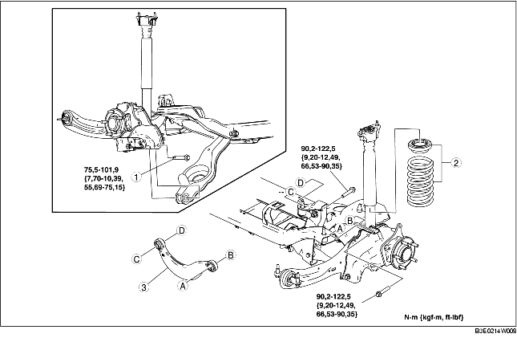

1. Déposer le capteur arrière de réglage automatique des phares. (voir la section DÉPOSE/REPOSE DE CAPTEUR DE RÉGLAGE AUTOMATIQUE DE NIVEAU DE VÉHICULE.)
2. Déposer les différents éléments selon l'ordre indiqué dans le tableau.
3. Pour la repose, suivre l'ordre inverse de la dépose.
4. Inspecter la géométrie des roues, et opérer les réglages nécessaires.
(voir la section GEOMETRIE DE ROUE ARRIERE.)

.
|
1
|
Boulon extérieur de bras inférieur arrière
(voir la section Note sur la dépose de boulon extérieur de bras inférieur arrière.)
|
|
2
|
Composant de ressort hélicoïdal arrière
(voir la section DEPOSE/REPOSE DE RESSORT HELICOIDAL ARRIERE.)
|
|
3
|
Bras supérieur arrière
(voir la section Note sur la repose du bras supérieur arrière.)
|
1. Soutenir le bras inférieur arrière à l'aide d'un cric.
2. Desserrer le boulon intérieur du bras inférieur arrière.
3. Déposer le boulon extérieur du bras inférieur arrière.
1. Reposer le bras supérieur arrière de sorte que le repère IN se trouve face à l'intérieur du véhicule.